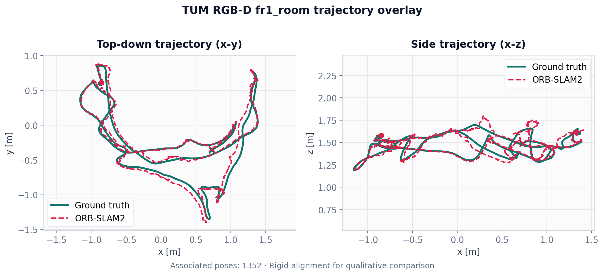
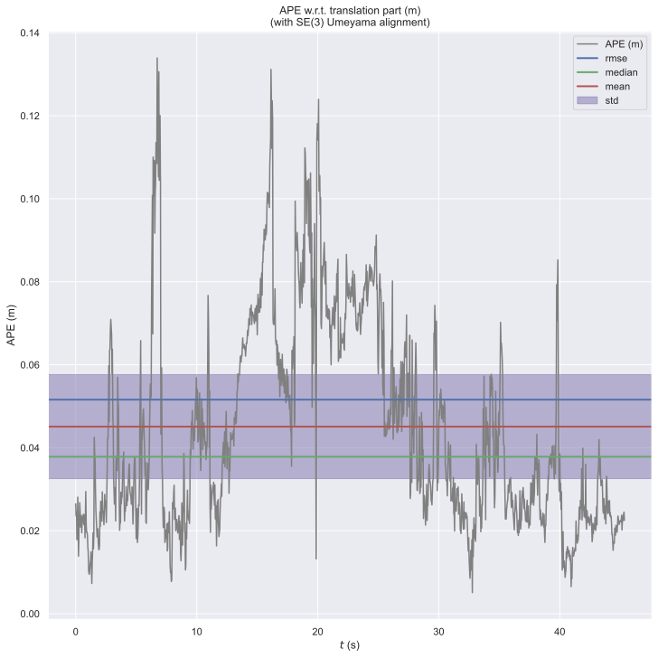
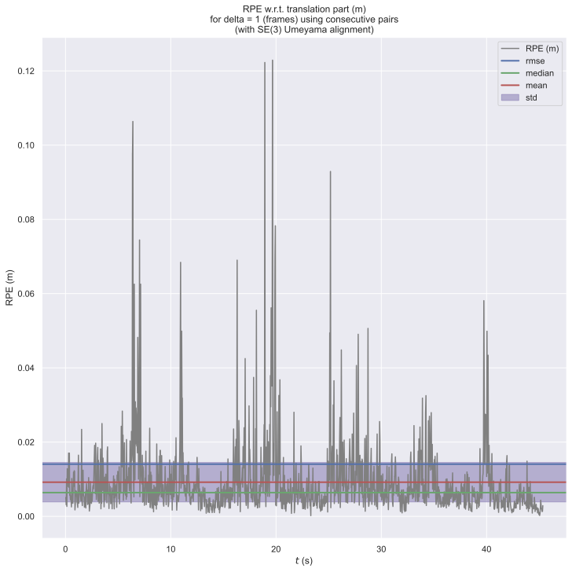
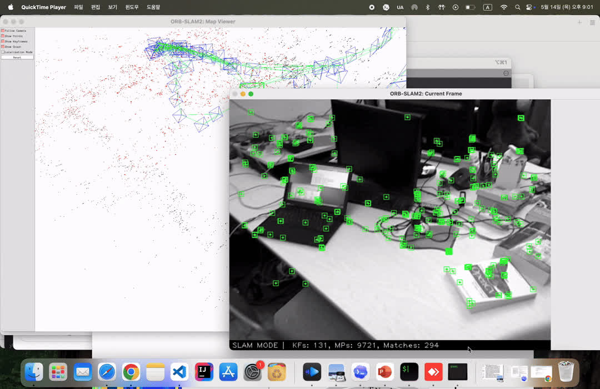

ORB-SLAM2 in macOS
MacBook에서 TUM RGB-D fr1_room 시퀀스를 실행하고 Pangolin Viewer로 map point와 current frame을 확인한 결과
작업 개요
ORB-SLAM2는 Linux 중심으로 작성된 고전적 Visual SLAM 코드베이스다. 이 프로젝트에서는 해당 코드를 macOS에서 빌드하고, RGB-D 예제를 실행하며, Pangolin Viewer와 evo 평가까지 확인 가능한 형태로 정리했다.
작업 범위는 macOS 의존성 정리, Pangolin main-thread 문제 수정, TUM RGB-D
fr1_room 실행, trajectory 저장, APE/RPE 정량 평가까지 포함한다.
단순 실행 확인이 아니라 재현 가능한 빌드 스크립트와 실행 절차를 함께 남기는 것을 기준으로 구성했다.
구현 범위
Homebrew 기반 의존성과 CMake preset을 정리해 ORB-SLAM2를 MacBook에서 빌드 가능하게 구성했다.
Pangolin Viewer가 macOS AppKit 제약을 만족하도록 thread 구조를 조정했다.
TUM RGB-D fr1_room 시퀀스에서 map 생성과 trajectory 저장을 확인했다.
evo로 APE와 RPE를 계산해 macOS 실행 결과를 수치로 점검했다.
실행 환경
| Target | MacBook / macOS |
|---|---|
| SLAM | ORB-SLAM2 RGB-D example |
| Core dependencies | OpenCV4, Eigen3, Pangolin, DBoW2, g2o |
| Dataset | TUM RGB-D rgbd_dataset_freiburg1_room |
| Evaluation | evo APE / RPE with trajectory alignment |
주요 문제
macOS 포팅 과정에서는 OpenCV4 API 변경, Eigen allocator 타입, macOS dynamic library suffix, g2o의 오래된 C++ 코드 등 컴파일 레벨의 수정이 필요했다. 다만 가장 결정적인 문제는 빌드가 아니라 Pangolin Viewer의 실행 thread 구조에서 발생했다.
*** Terminating app due to uncaught exception 'NSInternalInconsistencyException',
reason: 'nextEventMatchingMask should only be called from the Main Thread!'
ORB-SLAM2는 기본적으로 Viewer를 별도 std::thread에서 실행한다. Linux 환경에서는 이 구조가 자연스럽지만,
macOS의 AppKit은 UI event loop가 main thread에서 동작해야 한다. Pangolin의 macOS backend도 이 제약을 그대로 받기 때문에,
Viewer thread 안에서 window event를 처리하려고 하면 위와 같은 예외가 발생했다.
수정 결과
macOS에서는 Viewer를 background thread에 유지하지 않고 main thread에서 실행하도록 ORB-SLAM2 example의 실행 흐름을 변경했다. Tracking sequence는 worker thread로 분리하고, Pangolin Viewer는 main thread에서 동작하도록 정리했다.
Main thread에서 sequence 처리, Viewer는 내부 background thread에서 실행
Tracking은 worker thread로 분리, Viewer는 main thread에서 실행
macOS용 build script와 dependency 설치 스크립트도 함께 추가했다. 결과적으로 Linux 중심이던 원본 프로젝트를 macOS에서 재현 가능한 절차로 실행할 수 있게 정리했다.
실행 명령어
빌드 후에는 ORB-SLAM2 루트에서 아래 명령어로 TUM RGB-D fr1_room 시퀀스를 실행했다.
./Examples/RGB-D/rgbd_tum Vocabulary/ORBvoc.txt \
Examples/RGB-D/TUM1.yaml \
datasets/rgbd_dataset_freiburg1_room \
Examples/RGB-D/associations/fr1_room.txt
실행이 정상적으로 시작되면 vocabulary를 로드한 뒤 RGB-D frame을 처리하고, Viewer에는 current frame,
keyframe graph, map point가 표시된다. 실행이 끝나면 CameraTrajectory.txt와
KeyFrameTrajectory.txt를 저장해 evo 평가에 사용할 수 있다.
성능 실험
macOS 실행 가능 여부를 확인한 뒤 OpenCV thread 수 제한과 macOS QoS 설정을 비교했다. 측정 결과, 별도 thread/QoS tuning을 적용한 경우보다 기본 동작이 더 안정적이었다.
| 설정 | Median tracking time | Mean tracking time |
|---|---|---|
| 기본 동작 | 0.105262 s | 0.143317 s |
| thread/QoS tuning 적용 | 0.109741 s | 0.245917 s |
특히 mean tracking time이 크게 증가했기 때문에, 강제 thread tuning은 기본값에서 제외하고 필요할 때만 환경 변수로 켤 수 있게 분리했다. 이 결과는 macOS에서 thread 제어를 추가하는 것이 항상 tracking 성능 개선으로 이어지지는 않음을 보여준다.
evo 정량 평가
evo repository
Viewer에서 map point와 camera frame이 정상적으로 표시되더라도, trajectory 정확도는 별도 평가가 필요하다.
CameraTrajectory.txt와 TUM RGB-D ground truth를 evo에 입력해 APE와 RPE를 계산했다.
| Metric | RMSE (m) | Mean (m) | Median (m) | Max (m) |
|---|---|---|---|---|
| APE trans | 0.051597 | 0.045099 | 0.037835 | 0.133933 |
| RPE trans, 1 frame | 0.014056 | 0.009195 | 0.006391 | 0.122899 |
| Metric | RMSE (deg) | Mean (deg) | Median (deg) | Max (deg) |
|---|---|---|---|---|
| RPE rot, 1 frame | 0.539543 | 0.430591 | 0.351778 | 3.096500 |



평가 명령어
evo_ape tum \
datasets/rgbd_dataset_freiburg1_room/groundtruth.txt \
CameraTrajectory.txt \
-a --t_max_diff 0.02 --plot_mode xyzevo_rpe tum \
datasets/rgbd_dataset_freiburg1_room/groundtruth.txt \
CameraTrajectory.txt \
-a --t_max_diff 0.02 -r trans_part -d 1 -u f \
--plot_mode xyz결과 요약
ORB-SLAM2 macOS 포팅의 핵심 문제는 단순 dependency 수정이 아니라 GUI thread model이었다. Pangolin Viewer를 main thread에서 실행하고 tracking sequence를 worker thread로 분리함으로써 macOS AppKit 제약을 만족하는 실행 구조를 만들었다.
성능 측정에서는 기본 동작이 thread/QoS tuning보다 더 낮은 mean tracking time을 보였다. 따라서 기본 실행 경로는 원본 동작에 가깝게 유지하고, 실험적 thread 옵션은 필요할 때만 켤 수 있도록 분리했다.
최종적으로 MacBook에서 ORB-SLAM2 RGB-D example을 실행하고, Pangolin Viewer 출력과 evo 기반 trajectory 평가까지 확인한 재현 가능한 프로젝트로 정리했다.

ORB-SLAM2-for-macOS macOS build scripts, Pangolin main-thread fix, README_macOS, and RGB-D evaluation notes github.com/noctml/ORB-SLAM2-for-macOS
Comments